Neighbour list object:
Number of regions: 1720
Number of nonzero links: 10526
Percentage nonzero weights: 0.3558004
Average number of links: 6.119767
Link number distribution:
1 2 3 4 5 6 7 8 9 10 11 12 13 14 15 16 18 27
4 16 52 175 348 493 344 177 62 28 10 4 2 1 1 1 1 1
4 least connected regions:
441 708 1391 1665 with 1 link
1 most connected region:
1636 with 27 linksMUSA500 Homework 2: Using Spatial Lag, Spatial Error and Geographically Weighted Regression to Predict Median House Values in Philadelphia Block Groups
Introduction
Philadelphia, celebrated for its historical depth and vibrant present, boasts an ever-changing real estate landscape. Yet, a report from the Economic League paints a more intricate image: between 2016 and 2021, the percentage of Philadelphia households struggling with housing costs dipped from 29.8% to 26.7% (Economic League, 2023). Given the essential nature of housing as a basic human need, ensuring its affordability is paramount to sustaining quality of life. Thus, understanding the elements that shape housing prices is key to navigating the housing market more effectively and making wiser, informed choices.
In our previous exploration of Philadelphia’s housing landscape, we used Ordinary Least Squares (OLS) regression to examine the relationship between median house value and several neighborhood characteristics, including the proportion of residents in the Block Group with at least a bachelor’s degree, housing vacancy, percentage of housing units that are detached single-family houses, and number of households living poverty. While OLS provided valuable insights, it operates on the assumption of no spatial autocorrelation. However, the real world, especially in the domain of housing and neighborhood dynamics, often defies this assumption as there is the phenomena of spatial autocorrelation, which can lead to biased and inefficient estimates if not addressed in regression models. To confront this inherent spatial nature of our data, in this report, we will venture into spatial lag, spatial error, and geographically weighted regression methodologies to understand if these models can better account for the spatial dependencies lurking in our OLS residuals, offering a more holistic and accurate picture of Philadelphia’s housing valuation dynamics.
Methods
A Description of the Concept of Spatial Autocorrelation
There’s a saying: “everything is related to everything else, but near things are more related than distant things.” This adage, known as Tobler’s First Law of Geography, brings to the fore the concept of spatial autocorrelation – the phenomenon where geographically close observations influence each other. In other words, the attributes of places (or events) become more dissimilar as they are located further apart.
To evaluate spatial autocorrelation, we use Moran’s I, a correlation coefficient that measures the spatial relationships within a dataset. Essentially, it assesses the similarity of an object to its neighbors.
Turning to the formula of Moran’s I, the Moran’s I can be calculated as: \[ I=\frac{N\sum_{i = 1}\sum_{j = 1}^{n}wij{(x_i-\bar{x})(x_j-\bar{x})}}{\sum_{i = 1}\sum_{j = 1}^{n}wij{\sum_{i = 1}^{n}{(x_i-\bar{x})^2}}} \] In this formula: N is the number of spatial units, Xi is the variable of interest, Xj is the variable value at another location j, X- is the mean of the variable X, wij is a matrix of spatial weights between spatial units i and j.
In this report, the weight matrix we use is queen contiguity. Based on this spatial matrix, a unit is considered adjacent (or a neighbor) to another if it shares either a border or a vertex (corner) with the other unit. This concept draws parallels to the movement of a queen in chess, which can traverse any number of squares in vertical, horizontal, or diagonal directions. For a dataset with n observations, this leads to an n x n matrix, commonly referred to as the weight or link matrix, which captures the pairwise spatial associations across the data. In this matrix, a ‘1’ denotes neighboring spatial units, while a ‘0’ signifies non-neighboring units. For this report, we will consistently use this weight matrix. However, it’s generally advisable to test multiple weight matrices to ensure that our findings aren’t solely influenced by the specific matrix chosen.
To determine if the spatial autocorrelation, as measured by Moran’s I, is significant, we perform random permutations, which tests the null hypothesis that there is no spatial autocorrelation against the alternative hypothesis that there is significant spatial autocorrelation. In this process, the observed value of Moran’s I is compared to a distribution of Moran’s I values generated from many random permutations of the spatial data. To elaborate, the observed house price values undergo 999 random shuffles, producing a corresponding 999 Moran’s I values from these permutations. Next, we arrange the 1000 Moran’s I values in decreasing order to determine the position of the Moran’s I value for the observed house price variable in relation to the values from the random permutations. If our observed value is in the extreme ends of this distribution (either very high or very low), we reject the null hypothesis, indicating that the observed spatial autocorrelation is significant.
While Moran’s I provides a global measure of spatial autocorrelation, it doesn’t tell us where the local clusters and local spatial outliers are. Local spatial autocorrelation, like Local Indicators of Spatial Association (LISA), allow us to identify specific areas of significant clustering or dispersion. For each block, by looking at the deviations of its housing value from the mean housing values(zi) and that of its neighbors(zj), spatial weights between i and j, and the total number of observations(n), we can then determine if it’s part of a significant cluster of similar values (high-high or low-low) or if it’s an outlier in its neighborhood (high-low or low-high). To be more specific, a positive value indicates that housing value of block i is surrounded by blocks with similar housing values, either all high or all low. A negative value indicates that housing value of block i a positive value indicates that housing value of block I is surrounded by blocks with similar housing values, either all high or all low. Also, a value near zero indicates no significant local spatial autocorrelation.
Significance tests for local spatial autocorrelation are based on Monte Carlo permutation approach, which tests the null hypothesis that there is no local spatial autocorrelation at location I against the alternative hypothesis that the local spatial autocorrelation is significant. During the permutation, the housing values of each block will be randomly shuffled for 999 times, based on which we calculate the new Moran’s I value for every location for each permutation. The value of Moran’s I at location i for the original dataset is ranked relative to the list of the values produced by the reshufflings. When values of the Moran’s I at location i for the original dataset are very low or very high relative to the list of results produced by the shuffling procedure, they are significant. A pseudo significance level can be ascertained by observing the rank of the observed value in comparison to the permuted outcomes. For instance, if the value of Moran’s I at location i from the original configuration ranks as the 88th highest out of 999 permutations, it’s viewed as a 88 in 1000 event with a pseudosignificance of p ~ 0.088.
A Review of OLS Regression and Assumptions
In our OLS regression model, we found that the predictors—PCTVACANT, PCTSINGLES, PCTBACHMOR, and LNNBELPOV100, are significantly correlated with the dependent variable LNMEDHVAL, and we rejected the null hypothesis that all beta coefficients are zero. We thoroughly assessed the regression assumptions for OLS regression, including the normality of residuals, homoscedasticity, absence of multicollinearity, linearity between the dependent variable y and each predictor x, and the independence of observations. While some assumptions are met in our model, there are some that must be challenged. We examined the spatial autocorrelation simply by plotting choropleth graphs, revealing noticeable spatial autocorrelation between the dependent variable and one of the predictors. Furthermore, the standardized regression residuals map exhibits some degree of spatial autocorrelation, challenging the assumption that residuals are random, and the observations are independent.
Therefore, we are using statistical method to test the spatial autocorrelation, which is called Moran’s I value, indicating whether spatial autocorrelation exists or not. Moran’s I value is between -1 to +1, and the more positive (approaching to +1) the number is, the stronger positive spatial autocorrelations there would be, and more negative (approaching to -1) the more negative spatial autocorrelations.
To further assess spatial autocorrelation within OLS residuals, we employed an additional method that involves regressing these residuals against those of nearby locations. For this analysis, two distinct approaches were used to define neighbors, the Rook Neighbor and the Queen Neighbor Matrix. While rook neighbor method only considers the immediate neighbors in the four cardinal directions with directly shared boundaries, queen neighbor accounts for neighbors with shared corners or intersections, thereby considering a broader range of spatial relationships. Generally, the Queen Neighbor Matrix is preferred due to its broader scope.
In this process, the resulting residuals are calculated as the average of the residuals from these neighboring locations. We then conducted a linear regression using OLS residuals against these averaged neighbor residuals. The focus of this analysis was on the significance of the relationship and the magnitude of the slope coefficient. A p-value less than 0.05 would lead us to reject the null hypothesis, thereby confirming the presence of spatial autocorrelation, if the slope coefficient is larger than 0.
Heteroscedasticity is defined as the dispersion of residuals varies by level of predicted variable. To test the assumption of homoscedasticity, we have three tests that can be used in R: the Breusch-Pagan Test, Koenker-Bassett Test, and the White test. The null hypothesis here is that of homoscedasticity. If the p-value is less than 0.05, then we can reject the null hypothesis for the alternate hypothesis of heteroscedasticity.
Another assumption, normality of errors, meaning that the errors should be random noise, and they also should be normally distributed. The Jarque-Bera test in R examines the null hypothesis that the residuals are from a normal distribution, whereas the null hypothesis is that the errors are normal while the alternative hypothesis of non-normality.
Spatial Lag and Spatial Error Regression
In this assignment, we will use R for running spatial lag and spatial error regressions. Spatial lag regression assumes that the value of the dependent variable at one location is associated with the values of that variable in nearby locations.
\[ \begin{aligned} LNMEDHVAL = rho * W_y + \beta_0 + \beta_1 * PCTVACANT + \beta_2 * PCTSINGLE + \\ \beta_3 * PCTBACHMOR + \beta_4 * LNNBELPOV100 + \epsilon \end{aligned} \]
1)Here, ρ (rho) is the coefficient of the y-lag variable Wy, similar to how β1 is the coefficient of the variable X1. ( ρ is constrained between -1 and 1.) ρ (rho) is the spatial lag of the dependent variable entered as a predictor of the dependent variable. That is, it’s the value of the dependent variable in nearby areas. 2) B0 coefficient is the intercept or constant term which represents the expected mean value of y when all the predictor variables are equal to zero and also when spatially lagged dependent variable is equal to zero. B coefficients are the slope coefficients corresponding to each predictor variable(PCTVACANT, PCBACHOMORE, PCTSINGLES,NBELPOV100) 3) ε is the residuals, which represents the portion of y that cannot be explained by the model, capturing the effects of all other factors affecting y that are not included in the model. Spatial error regression assumes that the residual at one location is associated with residuals at nearby locations. Nearby is as defined by the weighs matrix W(rook, queen, within a certain distance of one another)
\[ \begin{aligned} LNMEDHVAL = \beta_0 + \beta_1 * PCTVACANT + \beta_2 * PCTSINGLE + \\ \beta_3 * PCTBACHMOR + \beta_4 * LNNBELPOV100 + \lambda * W _\epsilon + u \end{aligned} \]
Similarly with spatial lag model. What’s different is that the λ is the coefficient of spatially lagged residuals. Also, the u is simply random noise. We still assume that each of the predictors is linearly related with the dependent variable, that the residuals are normal, and that there should not be multicollinearity. The goal of spatial lag and spatial error regression is to take into consideration the fact there may be spatial dependencies in the residuals/the data. And through these two methods, the residuals will no longer be spatially autocorrelated and less heteroscedastic. Then, we’ll compare the results of spatial lag regression with OLS and the results of spatial error regression with OLS. After which we’ll further talk about how to pick the spatial models that perform the best. When comparing between spatial models, a number of measures are used for model comparability. These criteria include Akaike Information Criterion/Schwarz Criterion; Log Likelihood; Likelihood Ratio Test.
Firstly, Akaike Information Criterion (AIC) and Schwartz Criterion (SC) are measures of the goodness of fit of an estimated statistical model. They are relative measures of the information that is lost when a given model is used to describe reality and can be said to describe the tradeoff between precision and complexity of the model. Typically, the lower AIC and SC, the better the fit. Secondly, the Log Likelihood is associated with the maximum likelihood method of fitting a statistical model to the data and estimating model parameters. Maximum likelihood picks the values of the model parameters that make data more likely than any other values of the parameters would make them. The higher the log likelihood, the better the model fit. However, this measure should only be used for comparing nested models. In this sense, OLS is a special case of spatial lag and spatial error models, where the coefficient of the weighted residuals term is zero. While spatial lag and spatial error are not a special case of each other. As such, we can’t use the log likelihood ratio to compare them. Thirdly, the Likelihood ratio test compares the OLS model with the spatial model. The null hypothesis is the spatial lag(error) model is not a better specification than the OLS model. If p < 005, we reject the null hypothesis, and state that the spatial lag(error) model is doing a better job than the OLS model. Another way to compare is by examining the Moran’s I statistic applied to the regression residuals in the first place. Moran’s I measures whether the residuals from a regression model exhibit spatial autocorrelation, which implies that the model may not adequately account for the spatial relationships among observations. If the Moran’s I is significantly different from zero, it suggests that there is spatial autocorrelation, indicating that the OLS model may not fully address the spatial aspects.
There’s also a different approach to compare OLS results with spatial lag and spatial error results by looking at the Lagrange Multiplier Diagnostics in the regression output. This method provides a strategy for finding the maximum/minimum of a function subject to constraints. Specifically, we can compare the LM(error) vs LM(lag) statistics. If neither of them is statistically significant(p>0.05 for both), it suggests that OLS is a better fit. However, if one of the LM statistics is more statistically significant, indicated by a lower p-value or a higher test statistic value, then that model may be a better choice.
Geographically Weighted Regression
For this assignment, we will conduct Geographically Weighted Regression (GWR) entirely in R.
Geographically weighted regression (GWR) is a spatial analysis method that takes non-stationary variables, for example demographic factors in our case, into consideration and models the local regression between these predictors and an outcome of interest (Columbia University, 2023). Simpson’s paradox states that when the population is divided into smaller sub-groups, the relationship between two variables within a population changes, disappears, or even reverses (Sprenger & Weinberger, 2021).
Local regression refers to regression for each location, where you will need multiple observations to run a regression not just a single observation. GWR uses other observations in the dataset to run the regression, observations that are close to location I are given greater weights.
The equation for GWR model is written for each observation i=1…n:
\[ y_i = \beta_{i0} + \beta_{i1} x_{i1} + \beta_{i2} x_{i2} + \cdots + \beta_{im} x_{im} + \varepsilon_i = \beta_{i0} + \sum_{k=1}^{m} \beta_{ik} x_{ik} + \varepsilon_i \]
Subscript i in the equation above indicates that the regression model describes the relationship between the dependent variable y and predictors xk, (k=1…m) around the location of observation i, and that the relationship is specific to that location.
To run a local regression, multiple observations (locations) are needed, not just a single observation (location) i. GWR uses other observations in the dataset to run the regression, observations that are close to location i are given greater weights. The weight of an observation varies with location i, observations closer to I have a stronger influence on the estimation of the parameters for location i.
Bandwidth is the distance h to express how farther the weighing kernel is covering. Fixed bandwidth means that although the number of observations will vary around each point I, the bandwidth distance h (and the area) will remain constant. Adaptive bandwidth means that the number of observations will remain fixed, but the area will not be the same. In this case we are going to use adaptive bandwidth, as the fixed bandwidth is more appropriate in a setting where the distribution of the observations is relatively stable across space, while here the polygons are heterogeneously shaped or sized, so adaptive bandwidth is selected.
Most of the assumptions in OLS still hold in GWR, including the normality of residuals, homoscedasticity, no multicollinearity. Here for multicollinearity, we would look at the condition number in the attribute table, which indicates when the results are unstable due to local multicollinearity. The rule is, the results may not be reliable when the condition number is greater than 30, equal to null, or equal to -1.79769e+308. In addition to those, GWR also requires lots more observations, with at least 300.
P-value, which is usual to test whether the parameter estimates are significantly different from zero, is not that important in GWR model. As there is one set of parameters associated with each regression point, as well as one set of standard errors, then there are potentially hundreds or thousands of tests that would be required to determine whether parameters are locally significant.
Results
Spatial Autocorrelation
The very premise of spatial autocorrelation lies in the observation that near things are more similar to one another than to things farther away. This is Tobler’s First Law of Geography. Therefore, we begin by defining neighbors for each of the block groups in Philadelphia. Here, we will be using Queen Neighbors.
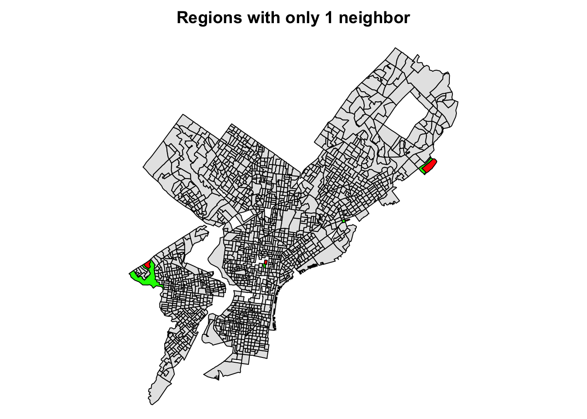
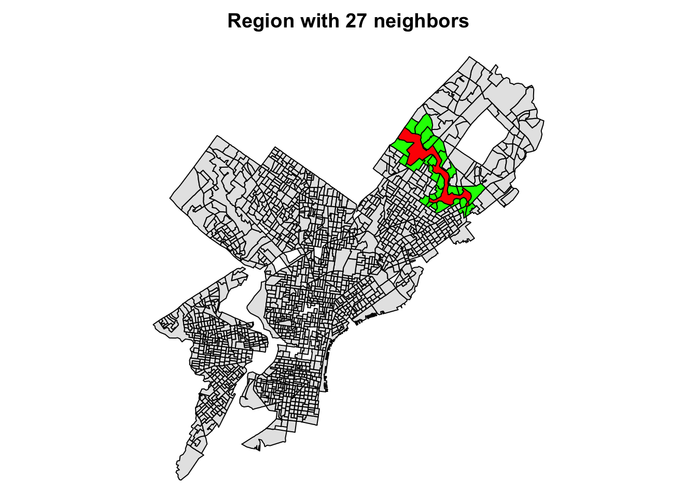
Global Moran’s I
After conducting thorough computations in R, we obtained a global Moran’s I statistic of 0.79 for our dependent variable LNMEDHVAL. This figure is notably high, indicating a strong level of spatial autocorrelation. To further substantiate this finding, we employed a random permutation test. In this process, we randomly shuffled the values of LNMEDHVAL, recalculated Moran’s I for each shuffle, and repeated this procedure 999 times. This approach helps us to test our null hypothesis (H0) that suggests no spatial correlation, against the alternative hypotheses: Ha1, which posits positive spatial correlation, and Ha2, which suggests negative spatial autocorrelations. From the random permutations test results, we can also observe that with 1000 permutation, the p-value of is far less than 0.05. Moreover, from the histogram we can see that the original Moran’s I value is apparently separate from the other Moran’s I values from the 999 permutations, which means that it is much higher than the other Moran’s I values, indicating that there is significant spatial autocorrelation for our dependent variable LNMEDHVAL.
[1] 0.793565
Monte-Carlo simulation of Moran I
data: data_geom$LNMEDHVAL
weights: queenlist
number of simulations + 1: 1000
statistic = 0.79356, observed rank = 1000, p-value <
0.00000000000000022
alternative hypothesis: two.sided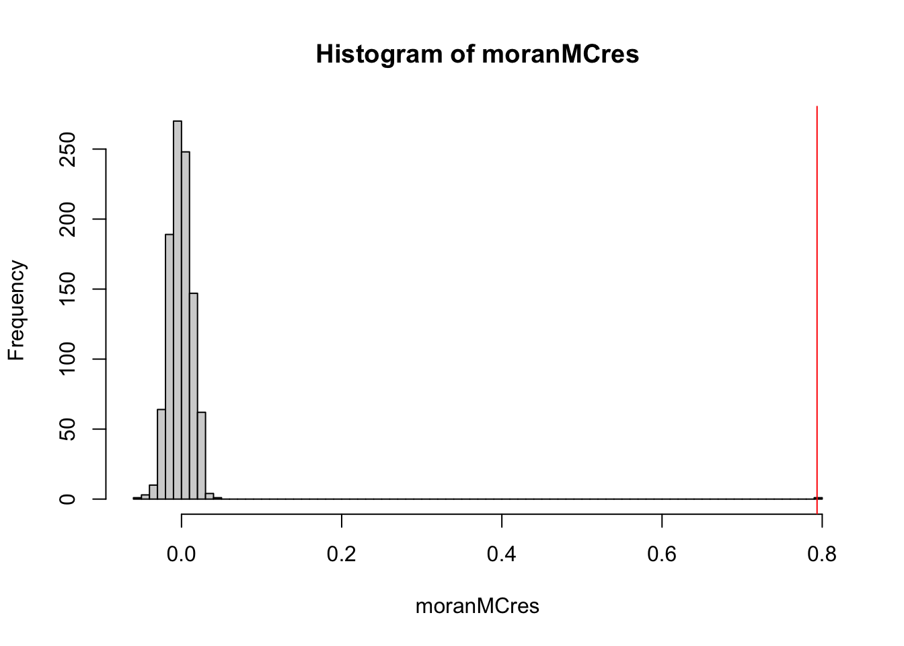
If the above were not sufficiently convincing, we can also create a plot to visualize the relationship between the LNMEDHVAL of the block groups and their neighbors. If there is no spatial autocorrelation, where there is no relationship between block group observations and those of their neighbors, a clear pattern should not be presented in the plot below. However, we observe that this is not the case.
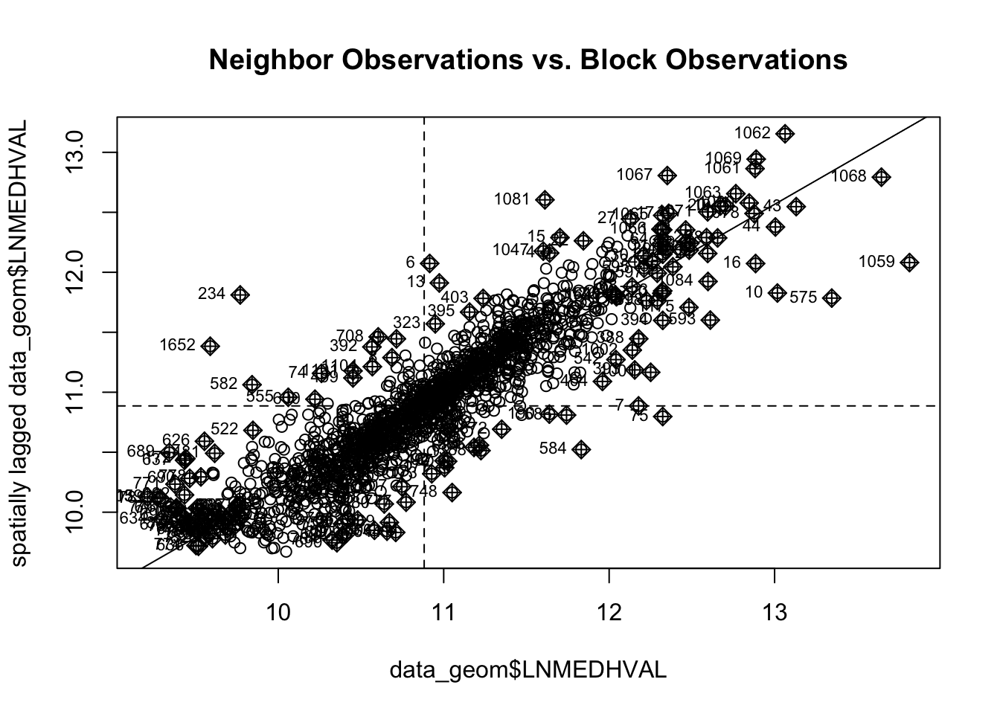
Local Moran’s I
Moving to local Moran’s I, which assesses the similarity of a location to nearby neighbors, we examined both the significance map and the cluster map. The presence of ‘high-high’ and ‘low-low’ clusters signifies strong spatial autocorrelation, indicating that both a location and its neighbors deviate from the global mean in a similar manner (either both above or both below the mean). Conversely, ‘high-low’ and ‘low-high’ clusters suggest dissimilarity between a location and its neighbors, implying an absence of spatial autocorrelation. Lastly, areas marked as ‘not significant’ indicate that the local Moran’s I value does not achieve statistical significance at the 0.05 level.
Ii E.Ii Var.Ii Z.Ii Pr(z != E(Ii))
1 5.35196819 -0.003049833231 1.3051455983 4.687394 0.0000027670601
2 4.41225942 -0.002216601273 0.7590492452 5.066922 0.0000004043007
3 3.50068095 -0.003049833231 0.7444928827 4.060696 0.0000489266898
4 2.44447746 -0.000843880799 0.2410048919 4.981074 0.0000006323230
5 1.88349103 -0.001094174334 0.6259107138 2.382098 0.0172143256212
6 0.09949306 -0.000001607927 0.0009208032 3.278811 0.0010424535943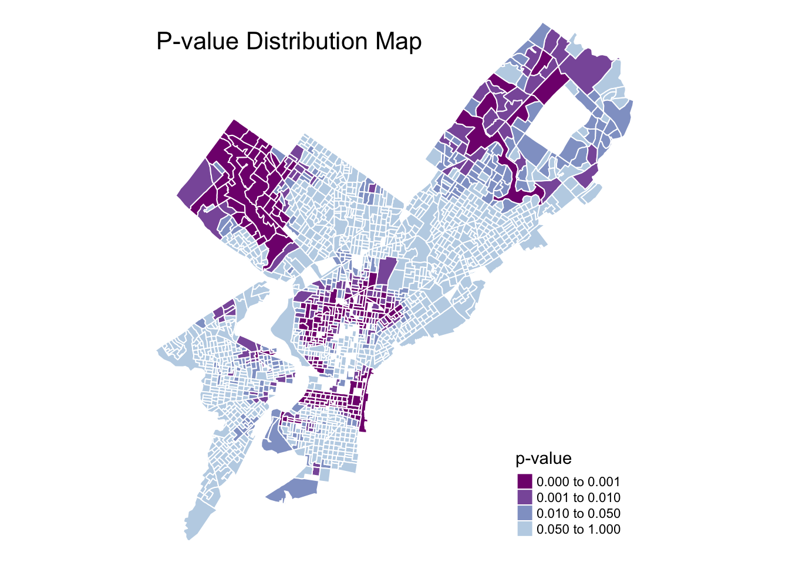
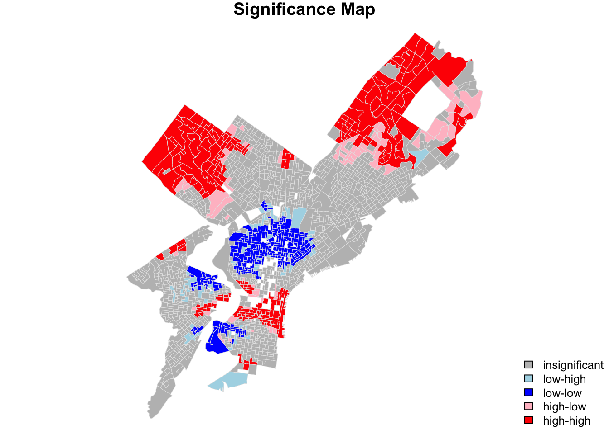
A Review of OLS Regression and Assumptions: Results
OLS Regression: Review
In our analysis based on the OLS (Ordinary Least Squares) output from Assignment 1, we concluded that the null hypothesis - which assumes that the beta coefficients of the predictors are zero - can be confidently rejected. This implies that each predictor exhibits a significant correlation with the dependent variable MEDHVAL. Notably, PCTBACHMOR shows the strongest positive correlation, indicating that a 1% increase in the proportion of residents with at least a bachelor’s degree is associated with an approximate 2.09% increase in median house values. Furthermore, the OLS model’s multiple and adjusted R-squared values, approximately 0.66, suggest that our model accounts for about 66% of the variance in LNMEDHVAL.
Call:
lm(formula = LNMEDHVAL ~ PCTSINGLES + PCTVACANT + PCTBACHMOR +
LNNBELPOV, data = data_geom)
Residuals:
Min 1Q Median 3Q Max
-2.25817 -0.20391 0.03822 0.21743 2.24345
Coefficients:
Estimate Std. Error t value Pr(>|t|)
(Intercept) 11.1137781 0.0465318 238.843 < 0.0000000000000002 ***
PCTSINGLES 0.0029770 0.0007032 4.234 0.0000242 ***
PCTVACANT -0.0191563 0.0009779 -19.590 < 0.0000000000000002 ***
PCTBACHMOR 0.0209095 0.0005432 38.494 < 0.0000000000000002 ***
LNNBELPOV -0.0789035 0.0084567 -9.330 < 0.0000000000000002 ***
---
Signif. codes: 0 '***' 0.001 '**' 0.01 '*' 0.05 '.' 0.1 ' ' 1
Residual standard error: 0.3665 on 1715 degrees of freedom
Multiple R-squared: 0.6623, Adjusted R-squared: 0.6615
F-statistic: 840.9 on 4 and 1715 DF, p-value: < 0.00000000000000022'log Lik.' -711.4933 (df=6)OLS Regression: Heteroscedasticity
During our diagnostic checks for the OLS model, we identified a bit of heteroscedasticity through the residual plot. To investigate this further, we applied three statistical tests for heteroscedasticity: the Breusch-Pagan test, the Koenker-Bassett test, and the White test. The null hypothesis is that of homoscedasticity, and if the p-value is less than 0.05, then we can reject the null hypothesis for the alternate hypothesis of heteroscedasticity. From the results, we can see that all three tests are giving p values far less than 0.05, indicating that there is a problem with heteroscedasticity. This finding aligns with our earlier observations from Homework 1, where we noticed heteroscedasticity in the plot of standardized residuals versus predicted values.
Breusch-Pagan test
data: reg
BP = 113.19, df = 4, p-value < 0.00000000000000022
studentized Breusch-Pagan test
data: reg
BP = 42.868, df = 4, p-value = 0.00000001102White's test results
Null hypothesis: Homoskedasticity of the residuals
Alternative hypothesis: Heteroskedasticity of the residuals
Test Statistic: 43.94
P-value: 0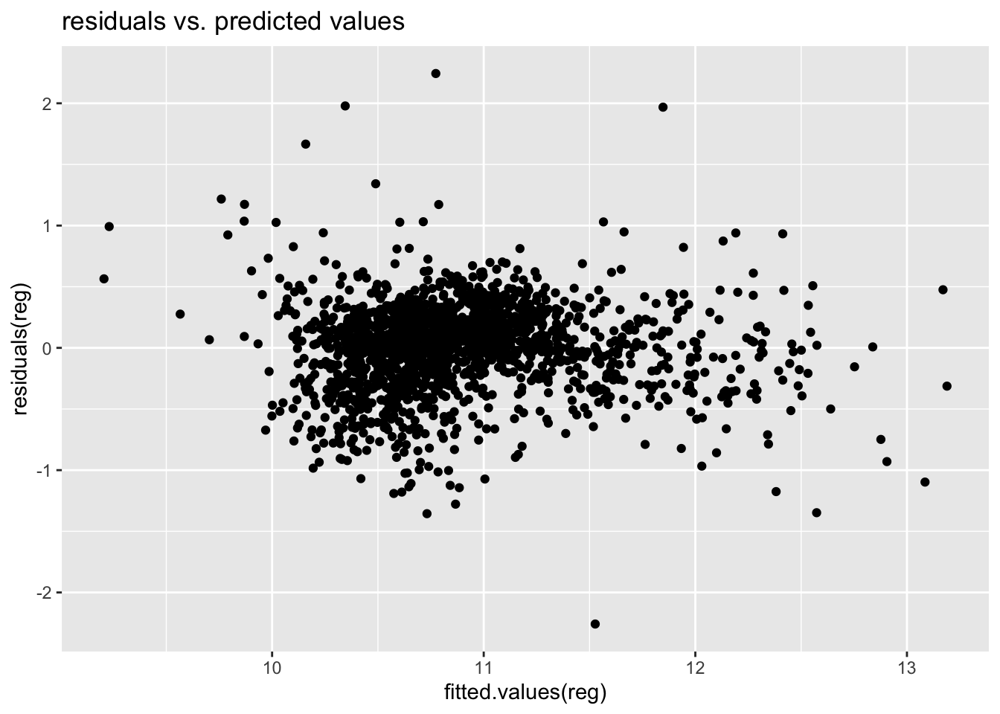
OLS Regression: Normality of errors
In addition to heteroscedasticity, we also check the normality of errors using a statistical test called Jarque-Bera test, which examines whether the errors are random noise or not, giving that the null hypothesis of normal distribution of residuals. From the test results, we can conclude that the errors are non-normal as p-value is less than 0.05, rejecting our null hypothesis. However, this statistical test result is differing from the conclusion we obtained in HW1, where we observed a normally distributed histogram of the standardized residuals. This discrepancy might be due to the highly conservative nature of the Jarque-Bera test, which is sensitive to even minor deviations from normality, often leading to their identification as statistically significant. Therefore, even though the histogram of residuals seems to be normal, there still might be slight non-normality existing, which is hard to observe by human eyes.
Jarque Bera Test
data: reg$residuals
X-squared = 778.96, df = 2, p-value < 0.00000000000000022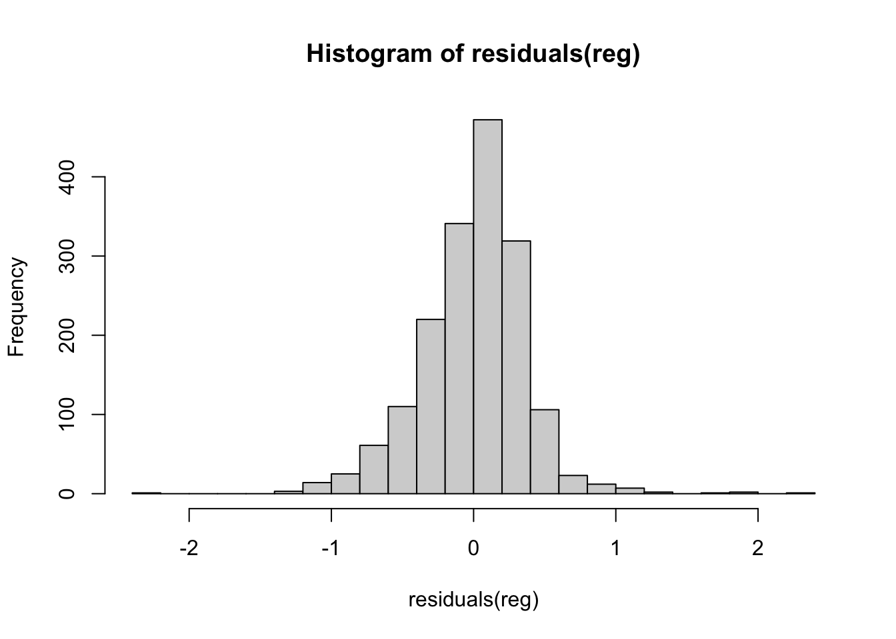
OLS Regression: Residuals and Neighbor Residuals
To delve deeper into the issue of spatial autocorrelation, we conducted a regression analysis between OLS residuals and Spatial Lag residuals, using a Queen Weighted Matrix. The results revealed a significant beta coefficient with a relatively high value of 0.73. This suggests a strong statistical association between neighboring residuals, where a unit change in the lagged residual corresponds to a 0.73 unit change in the residual. Then we performed the Moran’s I test showing the Moran’s I value of the standardized residuals, which is significant and showing a value of 0.31.Within the scatter plot of spatially lagged residuals against standardized residuals, it also presents a linear correlated pattern, which is telling that there is a positive spatial autocorrelation in the OLS residuals which is problematic.
We will test the presence of spatial autocorrelation in two ways: 1) by regressing residuals on their queen neighbors, and 2) by looking at the Moran’s I of the residuals.
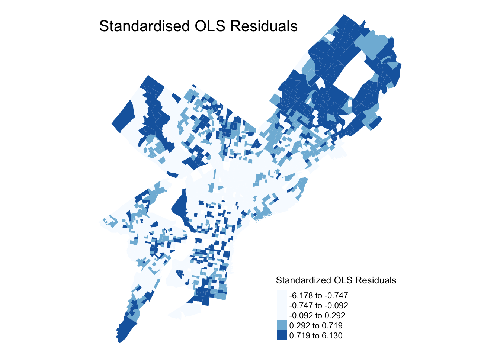
First, let’s regress the OLS standardized residuals on the spatial lag of the OLS residuals (i.e., OLS residuals at the queen neighbors). We can see that the beta coefficient of the lagged residuals is significant and positive (0.732, p<<0.05), meaning that there’s a significant level of spatial autocorrelation in the residuals. This is consistent with Moran’s I of the residuals we see below.
Call:
lm(formula = standardised ~ resnb)
Residuals:
Min 1Q Median 3Q Max
-5.3685 -0.4450 0.0585 0.4618 5.4435
Coefficients:
Estimate Std. Error t value Pr(>|t|)
(Intercept) -0.01281 0.02121 -0.604 0.546
resnb 0.73235 0.03244 22.576 <0.0000000000000002 ***
---
Signif. codes: 0 '***' 0.001 '**' 0.01 '*' 0.05 '.' 0.1 ' ' 1
Residual standard error: 0.8793 on 1718 degrees of freedom
Multiple R-squared: 0.2288, Adjusted R-squared: 0.2283
F-statistic: 509.7 on 1 and 1718 DF, p-value: < 0.00000000000000022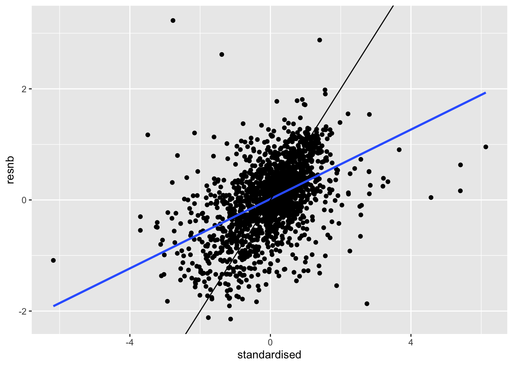
Again, we can use moran.mc to generate a Moran’s I statistic and a pseudo p-value.
Monte-Carlo simulation of Moran I
data: standardised
weights: queenlist
number of simulations + 1: 1000
statistic = 0.3124, observed rank = 1000, p-value < 0.00000000000000022
alternative hypothesis: two.sided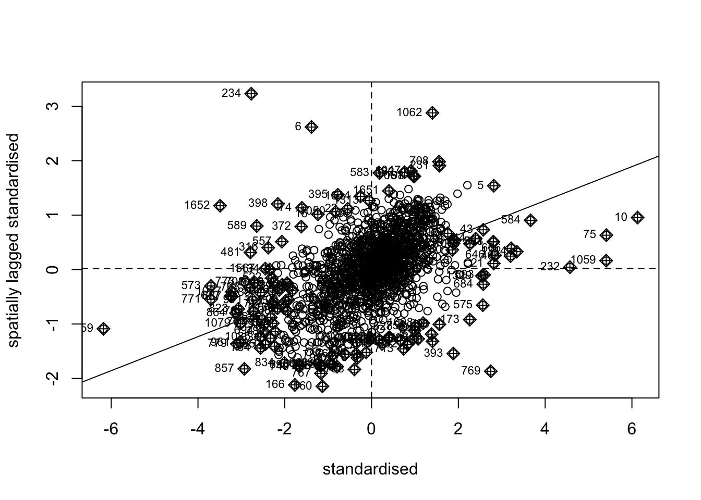
From the above, it is strongly apparent that spatial autocorrelation exists among the regression residuals of the OLS Model. The p-value is very small indicating that Moran’s I is significant. Because there’s clearly spatial autocorrelation in OLS residuals, the OLS Model is inappropriate and we need to consider another method. Here, we will attempt to run the Spatial Lag Model, the Spatial Error Model, and Geographically Weighted Regression.
Spatial Lag and Spatial Error Regression Results
Regression Analysis: Spatial Lag Regression
Call:lagsarlm(formula = LNMEDHVAL ~ PCTVACANT + PCTSINGLES + PCTBACHMOR +
LNNBELPOV, data = data_geom, listw = queenlist)
Residuals:
Min 1Q Median 3Q Max
-1.655421 -0.117248 0.018654 0.133126 1.726436
Type: lag
Coefficients: (asymptotic standard errors)
Estimate Std. Error z value Pr(>|z|)
(Intercept) 3.89845489 0.20111357 19.3843 < 0.00000000000000022
PCTVACANT -0.00852940 0.00074367 -11.4694 < 0.00000000000000022
PCTSINGLES 0.00203342 0.00051577 3.9425 0.00008063503
PCTBACHMOR 0.00851381 0.00052193 16.3120 < 0.00000000000000022
LNNBELPOV -0.03405466 0.00629287 -5.4116 0.00000006246
Rho: 0.6511, LR test value: 911.51, p-value: < 0.000000000000000222
Asymptotic standard error: 0.01805
z-value: 36.072, p-value: < 0.000000000000000222
Wald statistic: 1301.2, p-value: < 0.000000000000000222
Log likelihood: -255.74 for lag model
ML residual variance (sigma squared): 0.071948, (sigma: 0.26823)
Number of observations: 1720
Number of parameters estimated: 7
AIC: 525.48, (AIC for lm: 1435)
LM test for residual autocorrelation
test value: 67.737, p-value: 0.00000000000000022204
Likelihood ratio for spatial linear models
data:
Likelihood ratio = 911.51, df = 1, p-value < 0.00000000000000022
sample estimates:
Log likelihood of lagreg Log likelihood of reg
-255.7400 -711.4933
Breusch-Pagan test
data:
BP = 210.76, df = 4, p-value < 0.00000000000000022
studentized Breusch-Pagan test
data:
BP = 51.411, df = 4, p-value = 0.0000000001832
Jarque Bera Test
data: lagreg$residuals
X-squared = 2756.9, df = 2, p-value < 0.00000000000000022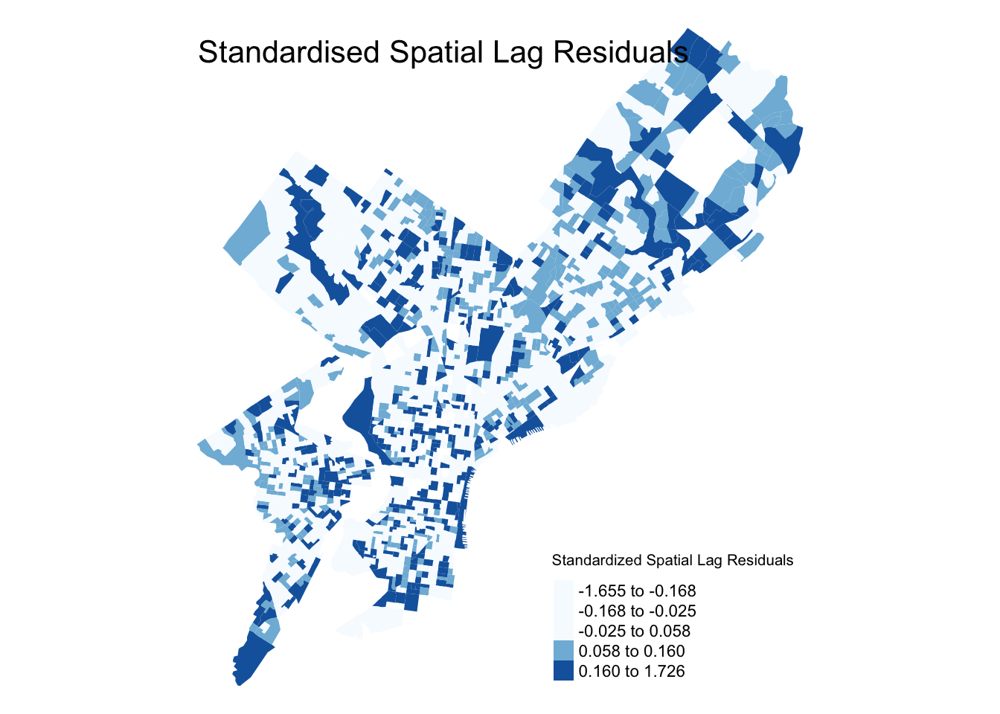
Monte-Carlo simulation of Moran I
data: reslag
weights: queenlist
number of simulations + 1: 1000
statistic = -0.082412, observed rank = 1, p-value = 0.002
alternative hypothesis: two.sided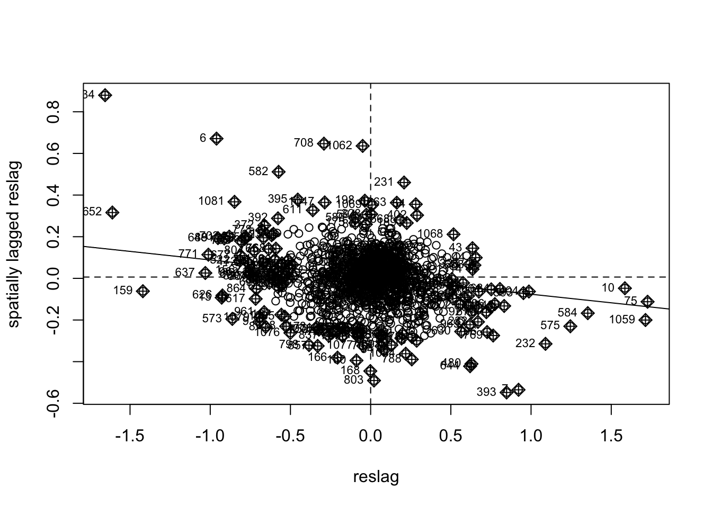
The spatial lag model yields several key insights. Firstly, the W_LNMEDHAL is 0.6511, signifying a substantial and significant spatial relationship: median house values in one area are moderately strongly linked with those in adjacent areas. Moreover, the predictors, including LNNBELPOV, PCTBACHMOR, PCTSINGLES, and PCTVACNT, have p-values far below the 0.05 threshold, confirming their statistical significance. When comparing with the Ordinary Least Squares (OLS) model, there’s a slight uptick in the p-values for these predictors, hinting at a greater likelihood that the associations between median housing values and these predictors could be attributed to chance.
At the same time, as suggested by the result of the Breusch-Pagan test, the p value is way much smaller than 0.05, which suggests that we reject the null hypothesis and acknowledge the presence of heteroscedasticity.
In comparing the OLS and Spatial Lag regressions, we turn to the Akaike Information Criterion (AIC), Log Likelihood, and the Likelihood Ratio Test. The Spatial Lag regression yields an AIC of 525.48—markedly lower than the OLS regression’s AIC of 1435—and a Log Likelihood of -255.74, which surpasses the OLS regression’s -711.49. The Likelihood Ratio Test’s p-value is well below 0.05, leading us to discard the null hypothesis that the spatial lag model does not offer a better fit than the OLS model. Additionally, the Moran’s I value for the spatial lag model is a minimal -0.082412, indicating significantly reduced spatial autocorrelation in the residuals compared to the OLS regression. This evidence suggests that the Spatial Lag model provides a better fit.
Regression Analysis: Spatial Error Regression
Call:errorsarlm(formula = LNMEDHVAL ~ PCTVACANT + PCTSINGLES + PCTBACHMOR +
LNNBELPOV, data = data_geom, listw = queenlist)
Residuals:
Min 1Q Median 3Q Max
-1.926477 -0.115408 0.014889 0.133852 1.948664
Type: error
Coefficients: (asymptotic standard errors)
Estimate Std. Error z value Pr(>|z|)
(Intercept) 10.90643427 0.05346777 203.9815 < 0.00000000000000022
PCTVACANT -0.00578308 0.00088670 -6.5220 0.00000000006937
PCTSINGLES 0.00267792 0.00062083 4.3134 0.00001607389089
PCTBACHMOR 0.00981293 0.00072896 13.4615 < 0.00000000000000022
LNNBELPOV -0.03453409 0.00708933 -4.8713 0.00000110881162
Lambda: 0.81492, LR test value: 677.61, p-value: < 0.000000000000000222
Asymptotic standard error: 0.016373
z-value: 49.772, p-value: < 0.000000000000000222
Wald statistic: 2477.2, p-value: < 0.000000000000000222
Log likelihood: -372.6904 for error model
ML residual variance (sigma squared): 0.076551, (sigma: 0.27668)
Number of observations: 1720
Number of parameters estimated: 7
AIC: NA (not available for weighted model), (AIC for lm: 1435)
Likelihood ratio for spatial linear models
data:
Likelihood ratio = 677.61, df = 1, p-value < 0.00000000000000022
sample estimates:
Log likelihood of errreg Log likelihood of reg
-372.6904 -711.4933
Breusch-Pagan test
data:
BP = 23.213, df = 4, p-value = 0.0001148
studentized Breusch-Pagan test
data:
BP = 5.1627, df = 4, p-value = 0.271
Jarque Bera Test
data: errreg$residuals
X-squared = 3507, df = 2, p-value < 0.00000000000000022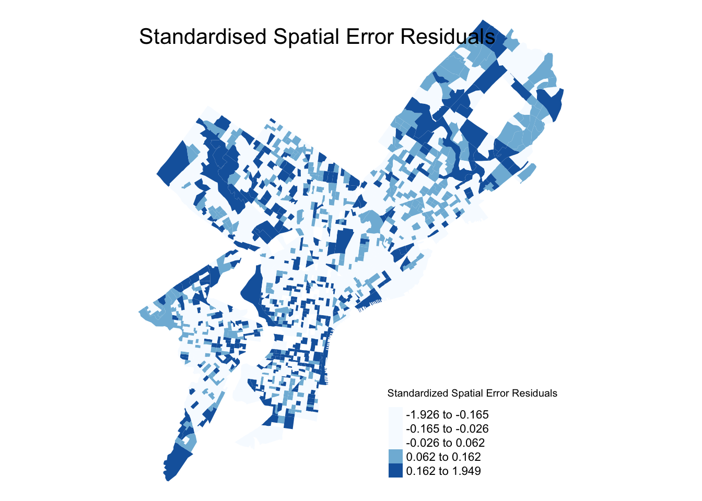
Monte-Carlo simulation of Moran I
data: reserr
weights: queenlist
number of simulations + 1: 1000
statistic = -0.094532, observed rank = 1, p-value = 0.002
alternative hypothesis: two.sided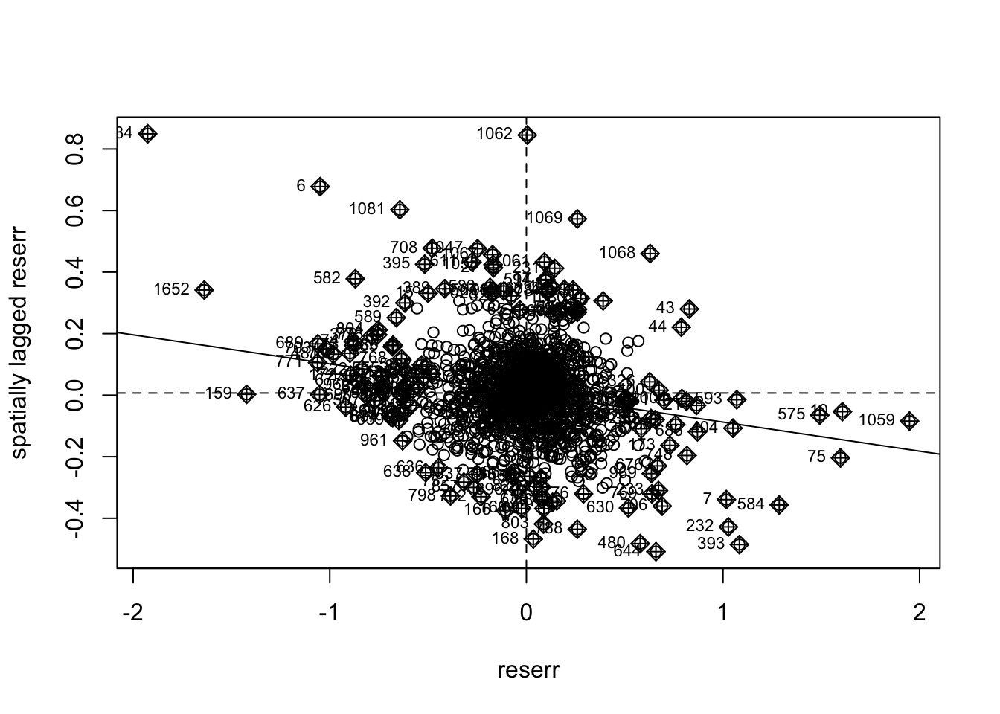
Now we will also look at the results of Spatial Error regression. Here, we see that lambda has the value of 0.81492 and is significant, indicating that the median house value in an area has a strong relationship with median house value in surrounding areas. Also, the corresponding p-value of all the predictors are smaller than 0.05, indicating that all of them are significant. All predictors maintain p-values under 0.05, underscoring their significance. Yet, relative to the OLS regression, the predictors’ p-values have risen, signaling a diminution in the strength of their statistical significance.
At the same time, as suggested by the result of the Breusch-Pagan test, the p value is way much smaller than 0.05, pointing to heteroscedasticity within the Spatial Lag regression residuals.
When we consider the AIC and Log Likelihood for the Spatial Error regression, we find an AIC of 754.985 and a Log Likelihood of -372.6904—both figures are more favorable than those from the OLS model. The Moran’s I value for the Spatial Error regression is just -0.094532, indicating even weaker spatial autocorrelation compared with the OLS model. Given that the Spatial Lag model has the lowest AIC, it stands as the best-performing model.
Lastly, in comparing the Spatial Lag and Spatial Error models, we note that the AIC for the Spatial Lag is lower than that of the Spatial Error Model, suggesting the former as the more predictive model. Since the Spatial Lag and Spatial Error models are not nested, direct comparison using the log-likelihood ratio is not applicable, thus we rely on the AIC for this assessment.
Geographically Weighted Regression Results
[1] "SpatialPolygonsDataFrame"
attr(,"package")
[1] "sp"Bandwidth: 0.381966 AIC: 1278.637
Bandwidth: 0.618034 AIC: 1333.984
Bandwidth: 0.236068 AIC: 1209.441
Bandwidth: 0.145898 AIC: 1115.788
Bandwidth: 0.09016994 AIC: 1007.261
Bandwidth: 0.05572809 AIC: 910.3448
Bandwidth: 0.03444185 AIC: 821.2049
Bandwidth: 0.02128624 AIC: 737.5153
Bandwidth: 0.01315562 AIC: 681.5228
Bandwidth: 0.008130619 AIC: 660.7924
Bandwidth: 0.005024999 AIC: 714.1722
Bandwidth: 0.009856235 AIC: 666.9998
Bandwidth: 0.006944377 AIC: 667.5033
Bandwidth: 0.008427513 AIC: 661.6706
Bandwidth: 0.007677515 AIC: 663.5923
Bandwidth: 0.008171309 AIC: 660.8446
Bandwidth: 0.008052658 AIC: 661.0577
Bandwidth: 0.008130619 AIC: 660.7924 Bandwidth: 47374.26 AIC: 1380.089
Bandwidth: 76576.63 AIC: 1412.319
Bandwidth: 29326.2 AIC: 1314.423
Bandwidth: 18171.89 AIC: 1205.382
Bandwidth: 11278.14 AIC: 1056.784
Bandwidth: 7017.572 AIC: 904.0994
Bandwidth: 4384.396 AIC: 773.8094
Bandwidth: 2757.003 AIC: 701.2702
Bandwidth: 1751.22 AIC: 920.906
Bandwidth: 3378.612 AIC: 714.9353
Bandwidth: 2578.424 AIC: 707.7338
Bandwidth: 2916.626 AIC: 700.5588
Bandwidth: 2860.559 AIC: 700.3531
Bandwidth: 2865.211 AIC: 700.3527
Bandwidth: 2863.515 AIC: 700.3524
Bandwidth: 2863.494 AIC: 700.3524
Bandwidth: 2863.492 AIC: 700.3524
Bandwidth: 2863.493 AIC: 700.3524
Bandwidth: 2862.372 AIC: 700.3525
Bandwidth: 2863.064 AIC: 700.3524
Bandwidth: 2863.329 AIC: 700.3524
Bandwidth: 2863.43 AIC: 700.3524
Bandwidth: 2863.468 AIC: 700.3524
Bandwidth: 2863.483 AIC: 700.3524
Bandwidth: 2863.489 AIC: 700.3524
Bandwidth: 2863.491 AIC: 700.3524
Bandwidth: 2863.492 AIC: 700.3524
Bandwidth: 2863.492 AIC: 700.3524
Bandwidth: 2863.492 AIC: 700.3524
Bandwidth: 2863.492 AIC: 700.3524 [1] 0.008130619[1] 2863.492Call:
gwr(formula = LNMEDHVAL ~ PCTVACANT + PCTSINGLES + PCTBACHMOR +
LNNBELPOV, data = shps, gweight = gwr.Gauss, adapt = bw,
hatmatrix = TRUE, se.fit = TRUE)
Kernel function: gwr.Gauss
Adaptive quantile: 0.008130619 (about 13 of 1720 data points)
Summary of GWR coefficient estimates at data points:
Min. 1st Qu. Median 3rd Qu. Max. Global
X.Intercept. 9.6727618 10.7143173 10.9542384 11.1742009 12.0831381 11.1138
PCTVACANT -0.0317407 -0.0142383 -0.0089599 -0.0035770 0.0167916 -0.0192
PCTSINGLES -0.0249706 -0.0075550 -0.0016626 0.0042280 0.0143340 0.0030
PCTBACHMOR 0.0010974 0.0101380 0.0149279 0.0202187 0.0347258 0.0209
LNNBELPOV -0.2365244 -0.0733572 -0.0401186 -0.0126657 0.0948768 -0.0789
Number of data points: 1720
Effective number of parameters (residual: 2traceS - traceS'S): 360.5225
Effective degrees of freedom (residual: 2traceS - traceS'S): 1359.477
Sigma (residual: 2traceS - traceS'S): 0.2762201
Effective number of parameters (model: traceS): 257.9061
Effective degrees of freedom (model: traceS): 1462.094
Sigma (model: traceS): 0.2663506
Sigma (ML): 0.245571
AICc (GWR p. 61, eq 2.33; p. 96, eq. 4.21): 660.7924
AIC (GWR p. 96, eq. 4.22): 308.7123
Residual sum of squares: 103.7248
Quasi-global R2: 0.8479244 Call:
gwr(formula = LNMEDHVAL ~ PCTVACANT + PCTSINGLES + PCTBACHMOR +
LNNBELPOV, data = shps, bandwidth = bw_fixed, gweight = gwr.Gauss,
hatmatrix = TRUE, se.fit = TRUE)
Kernel function: gwr.Gauss
Fixed bandwidth: 2863.492
Summary of GWR coefficient estimates at data points:
Min. 1st Qu. Median 3rd Qu. Max. Global
X.Intercept. 9.9111183 10.7329171 10.9397426 11.1639961 14.1200775 11.1138
PCTVACANT -0.0469926 -0.0137374 -0.0088796 -0.0038447 0.0778856 -0.0192
PCTSINGLES -0.0238330 -0.0073895 -0.0025702 0.0040499 0.0189995 0.0030
PCTBACHMOR -0.0860913 0.0118750 0.0168149 0.0213553 0.0306653 0.0209
LNNBELPOV -0.4449896 -0.0737744 -0.0433084 -0.0171174 0.1491700 -0.0789
Number of data points: 1720
Effective number of parameters (residual: 2traceS - traceS'S): 346.718
Effective degrees of freedom (residual: 2traceS - traceS'S): 1373.282
Sigma (residual: 2traceS - traceS'S): 0.2785229
Effective number of parameters (model: traceS): 255.6033
Effective degrees of freedom (model: traceS): 1464.397
Sigma (model: traceS): 0.2697189
Sigma (ML): 0.2488723
AICc (GWR p. 61, eq 2.33; p. 96, eq. 4.21): 700.3524
AIC (GWR p. 96, eq. 4.22): 352.3471
Residual sum of squares: 106.5324
Quasi-global R2: 0.843808 Object of class SpatialPolygonsDataFrame
Coordinates:
min max
x 2660604.8 2750171.3
y 207610.6 304858.8
Is projected: NA
proj4string : [NA]
Data attributes:
sum.w X.Intercept. PCTVACANT PCTSINGLES
Min. :16.03 Min. : 9.673 Min. :-0.031741 Min. :-0.024971
1st Qu.:24.47 1st Qu.:10.714 1st Qu.:-0.014238 1st Qu.:-0.007555
Median :26.64 Median :10.954 Median :-0.008960 Median :-0.001663
Mean :27.48 Mean :10.937 Mean :-0.009192 Mean :-0.002074
3rd Qu.:29.45 3rd Qu.:11.174 3rd Qu.:-0.003577 3rd Qu.: 0.004228
Max. :86.70 Max. :12.083 Max. : 0.016792 Max. : 0.014334
PCTBACHMOR LNNBELPOV X.Intercept._se PCTVACANT_se
Min. :0.001097 Min. :-0.23652 Min. :0.09911 Min. :0.001821
1st Qu.:0.010138 1st Qu.:-0.07336 1st Qu.:0.19114 1st Qu.:0.004201
Median :0.014928 Median :-0.04012 Median :0.23474 Median :0.005458
Mean :0.015267 Mean :-0.04485 Mean :0.25013 Mean :0.006536
3rd Qu.:0.020219 3rd Qu.:-0.01267 3rd Qu.:0.29127 3rd Qu.:0.007381
Max. :0.034726 Max. : 0.09488 Max. :0.54791 Max. :0.030192
PCTSINGLES_se PCTBACHMOR_se LNNBELPOV_se gwr.e
Min. :0.001177 Min. :0.0007667 Min. :0.01707 Min. :-1.50370
1st Qu.:0.003560 1st Qu.:0.0025261 1st Qu.:0.03521 1st Qu.:-0.09867
Median :0.005214 Median :0.0048373 Median :0.04198 Median : 0.01654
Mean :0.005118 Mean :0.0049127 Mean :0.04413 Mean : 0.01099
3rd Qu.:0.006596 3rd Qu.:0.0066118 3rd Qu.:0.05035 3rd Qu.: 0.12800
Max. :0.010560 Max. :0.0151900 Max. :0.09856 Max. : 1.67766
pred pred.se localR2 X.Intercept._se_EDF
Min. : 9.578 Min. :0.02931 Min. :0.1337 Min. :0.1028
1st Qu.:10.476 1st Qu.:0.05601 1st Qu.:0.5231 1st Qu.:0.1982
Median :10.831 Median :0.06773 Median :0.6342 Median :0.2434
Mean :10.871 Mean :0.07462 Mean :0.6186 Mean :0.2594
3rd Qu.:11.232 3rd Qu.:0.08449 3rd Qu.:0.7312 3rd Qu.:0.3021
Max. :13.307 Max. :0.23204 Max. :0.8863 Max. :0.5682
PCTVACANT_se_EDF PCTSINGLES_se_EDF PCTBACHMOR_se_EDF LNNBELPOV_se_EDF
Min. :0.001889 Min. :0.001221 Min. :0.0007951 Min. :0.01770
1st Qu.:0.004357 1st Qu.:0.003692 1st Qu.:0.0026197 1st Qu.:0.03651
Median :0.005661 Median :0.005407 Median :0.0050166 Median :0.04354
Mean :0.006778 Mean :0.005307 Mean :0.0050947 Mean :0.04576
3rd Qu.:0.007654 3rd Qu.:0.006841 3rd Qu.:0.0068568 3rd Qu.:0.05221
Max. :0.031311 Max. :0.010951 Max. :0.0157529 Max. :0.10222
pred.se.1
Min. :0.03040
1st Qu.:0.05808
Median :0.07024
Mean :0.07739
3rd Qu.:0.08762
Max. :0.24063 Global GWR Results
The overall R-squared: GWR vs OLS regression By comparing the R2 from OLS (0.662) with the Quasi-global R2 from GWR (0.848), we can see that GWR yields a better fit as over 84.8% of variance in the dependent variable can be explained by the predictors, while the OLS can only explain over 66.2%.
Compare the AIC: GWR vs OLS, Spatial Lag, Special Error We can also compare the Akaike Information Criteria(AIC) among GWR, OLS, Spatial Lag and Spatial Error models. The GWR model yields a lowest AIC with the value of 308.7, which is substantially smaller than the AIC for OLS, Spatial Error and Spatial Lag, which are 1443.4, 754.985 and 525.48 respectively. Therefore, the GWR model seems to be a better fit.
Moran’s I scatterplot of GWR residuals
From the MC simulation of Moran’s I for GWR model, we can see that there is a significant, though potentially weak, spatial autocorrelation present in the model. Specifically, the significance(p-value = 0.006) implies that there is a statistically significant spatial autocorrelation. Although the Moran’s I value is close to zero(0.03), it’s still suggested that there is a tendency for similar values to be clustered together than would be expected by random chance.
When comparing the scatter plots of OLS, spatial lag and spatial error, we can see that the spatial autocorrelation of the OLS model is the most significant, and the distribution of its points is clearly skewed towards the first and third quadrants, suggesting that the variables may exhibit a clear spatial clustering pattern. The other three models have weaker spatial autocorrelation, and the distribution of points is more random and close to the centerline, indicating that the distribution of these variables in space may be more random.
Monte-Carlo simulation of Moran I
data: resgwr
weights: queenlist
number of simulations + 1: 1000
statistic = 0.033425, observed rank = 992, p-value = 0.016
alternative hypothesis: two.sided
Monte-Carlo simulation of Moran I
data: standardised
weights: queenlist
number of simulations + 1: 1000
statistic = 0.3124, observed rank = 1000, p-value < 0.00000000000000022
alternative hypothesis: two.sided
Monte-Carlo simulation of Moran I
data: reslag
weights: queenlist
number of simulations + 1: 1000
statistic = -0.082412, observed rank = 1, p-value = 0.002
alternative hypothesis: two.sided
Monte-Carlo simulation of Moran I
data: reserr
weights: queenlist
number of simulations + 1: 1000
statistic = -0.094532, observed rank = 1, p-value = 0.002
alternative hypothesis: two.sided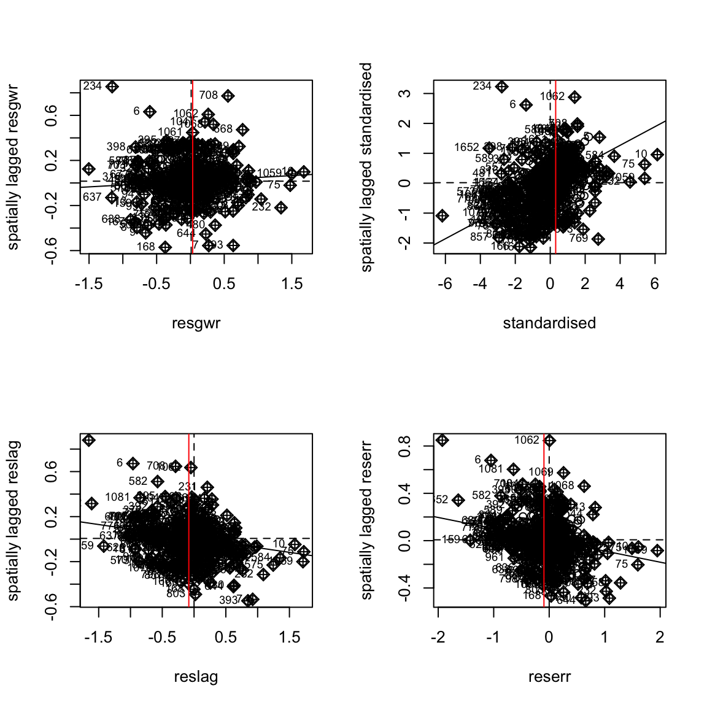
Local Regression Results
The map below shows the standardized coefficients which show the relationship between the predictor and the dependent variable to help us understand regional variation in the model explanatory variables. As we can see, areas with dark blue or red show either negative or positive relationship with the median house value that’s possibly significant. Specifically, the % of housing units with detached single family houses is positively significant with the median household value in Northwest and Northeast of the city, while the relationship become gradually negative when it comes to south Philadelphia near Schuylkill River. For the % of bachelor degree, there is a positive relationship with the dependent variable that’s possibly significant in Northwest of the city, center city, as well as the university city. As for the % of vacant housing and % of households living in poverty, there are negative relationships with the Median Household Value throughout the city as well.
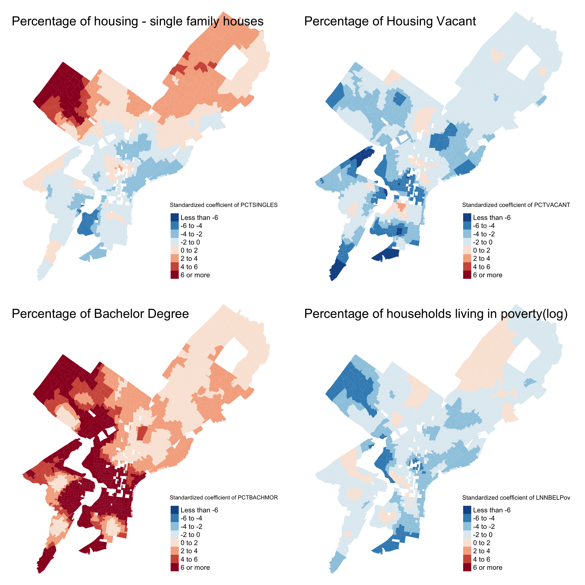
We can also look at the spatial distribution of the local R-squares. We can see that the four predictors (PCBACHMORE,PCTSINGLES,LNNBELPOV,PCTVACANT) do a good job explaining the variance in our dependent variable in most parts of Philadelphia, except the central city & its north, as well as some northeast, west parts of Philadelphia.
tm_shape(shps)+
tm_fill(col='localR2', breaks=c(0, 0.1, 0.2, 0.3, 0.4, 0.5, 0.6, 0.7), n=5, palette = 'Blues')+
tm_layout(frame=FALSE)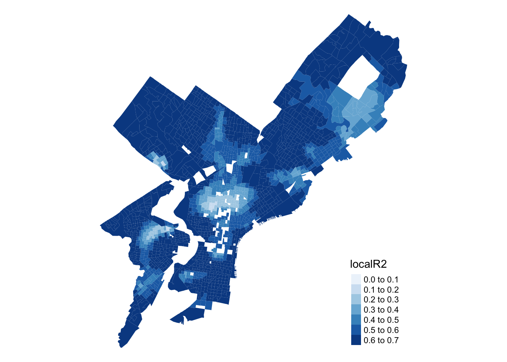
Discussion
Model Comparison
GWR vs Spatial Error vs Spatial Lag vs OLS: By looking at the Moran’s I of the residuals & the AIC values from each model in the previous section, we can find that the GWR yields a lowest value in terms of Moran’s I and AIC value. As such, GWR is selected as the best model.
Spatial Lag Model vs OLS: Again, Spatial Lag model yields a lower AIC value and a higher Log Likelihood than the OLS model. In the meantime, the likelihood ratio test is significant, indicating that the Spatial Lag model is better than OLS model.
Spatial Error Model to OLS: Similarly, Spatial Error model has a lower AIC value and Higher Log Likelihood than the OLS model. And the likelihood ratio test is also significant. Therefore, it stands as the better-performing model.
GWR to OLS: By comparing the R2 from OLS (0.662) with the Quasi-global R2 from GWR (0.848), we can also come up with the conclusion that the GWR is the better model as well. Also, there are hot spots across space in the standardized coefficients, suggesting that spatial variability is present. It also means that the OLS might not capture the varying spatial relationships between the dependent variable and the four predictors as it violates the assumption of stationarity. In summary, the GWR model is more appropriate than OLS as it can capture the local variations in relationships that a single global model cannot.
Limitations
Spatial Lag & Regression Models Based on the result of the spatial regressions, there are still limitations of heteroscedasticity. To be more specific, the variance of the residuals is not constant across the range of the independent variables. This suggests that the standard errors of the regression coefficients may be biased, meaning that p-values can be unreliable. To improve the model, there is potential to reference alternative modeling approaches such as weighted least squares or transforming the dependent variable to stabilize the variance of the errors.
GWR Model GWR model also holds some similar assumptions like the normality of residuals, homoscedasticity and no multicollinearity. Based on our last assignment, the trends of residuals are close to normal. However, there is a concentration of data points towards the lower end of predicted values when checking homoscedasticity which might be an issue.
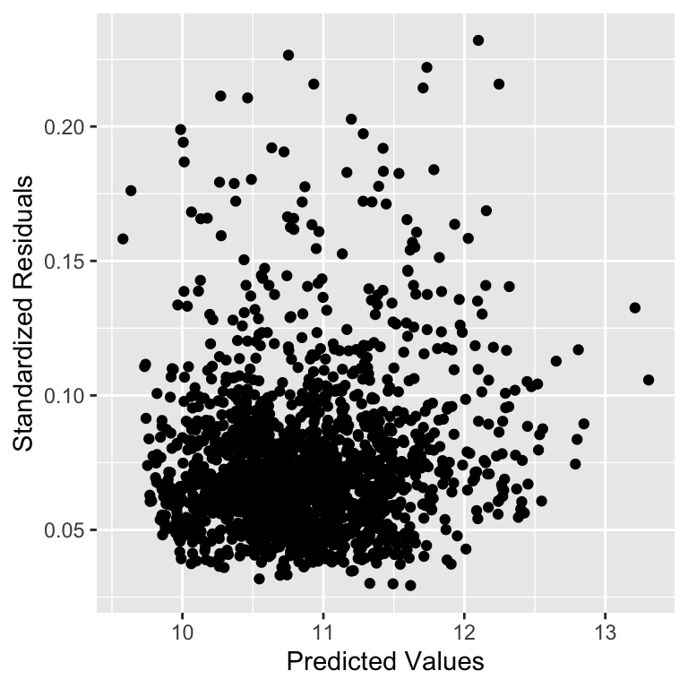
Also,there are also signs of multicollinearity in certain part of the area, for example the Northwest of the city. Appearently, there’re 2+ variables that have similar patterns of high-value clusters in that region. Also, the significance(p-value = 0.006) of the GWR model implies that there is a statistically significant spatial autocorrelation. This can lead to biased standard error estimates and inefficient estimators.
Clarifications
Weighted residuals are the ones from a regression model that have been adjusted for spatial autocorrelation in the error terms, among which the spatial weight matrices are used in the estimation of spatial regression. Spatial Lag model residuals are the differences between the observed values of the dependent variable and the values predicted by the spatial lag model. They are expected to have no autocorrelation if the model can explain the spatial dependence.
Also, in the current and earlier versions of ArcGIS Pro, some local R-squares are negative, which obviously makes no sense. Therefore, we mainly use R to do this assignment.
Reference
Columbia Mailman School of Public Health. (2023). Geographically Weighted Regression. Columbia University. https://www.publichealth.columbia.edu/research/population-health-methods/geographically-weighted-regression
Economy League. (2023). Philadelphia’s Housing Cost-burden: A Pre- and Post-Pandemic Comparison. https://www.economyleague.org/resources/philadelphias-housing-cost-burden-pre-and-post-pandemic-comparison
Springer, J. & Naftali, W. (2021). Simpson’s Paradox. Stanford Encyclopedia of Philosophy. https://plato.stanford.edu/entries/paradox-simpson/#Bib